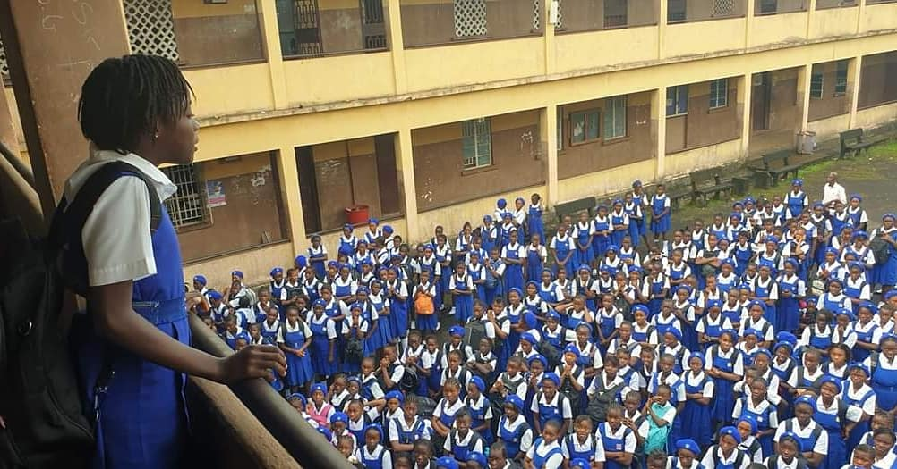

Hannah Benka-Coker: A Trailblazer for Women's Education in Sierra Leone
Hannah Benka-Coker (1903-1952) was a remarkable educator and activist whose contributions to Sierra Leonean society have left a lasting impact on the country’s educational landscape, particularly in the area of girls' education. Her passion, determination, and advocacy for equal access to education helped break down gender barriers, setting a precedent for generations of women to pursue their dreams and reach their potential.

She was born in Freetown, Sierra Leone, in a period when educational opportunities for girls were limited. She grew up in a society where traditional roles often restricted women to domestic responsibilities, with few avenues for formal education. Witnessing this inequality, Benka-Coker became determined to effect change and fought tirelessly to open doors that were historically closed to women. She recognized that educating women was key to their empowerment and saw an opportunity to transform society by creating equal educational opportunities.
In 1926, Benka-Coker co-founded the Freetown Secondary School for Girls (FSSG), a groundbreaking institution dedicated to educating young women in Sierra Leone. Her vision was to create a school that would not only teach girls basic literacy and numeracy but also encourage them to pursue academic and professional careers. Through this school, she empowered young girls to become leaders, thinkers, and active members of their communities. The establishment of FSSG represented a turning point in Sierra Leone’s educational history, providing a model that showed the value of educating girls.
Her influence extended beyond the boundaries of the classroom. Her work inspired a movement of female educators and activists who saw the transformative potential of education. Many of her students went on to make significant contributions to Sierra Leone and beyond, establishing successful careers in politics, business, and the arts. By advocating for girls' education, Benka-Coker helped to shift societal attitudes toward gender equality and the importance of women’s education.
Hannah Benka-Coker's life and work exemplify the profound impact that one individual can have on an entire society. Her dedication to the education and empowerment of women has inspired generations in Sierra Leone and beyond. Benka-Coker’s legacy lives on in the achievements of her students and in the growing movement for gender equality and educational access. Today, her story serves as a reminder of the importance of fighting for equal opportunities and the transformative power of education.